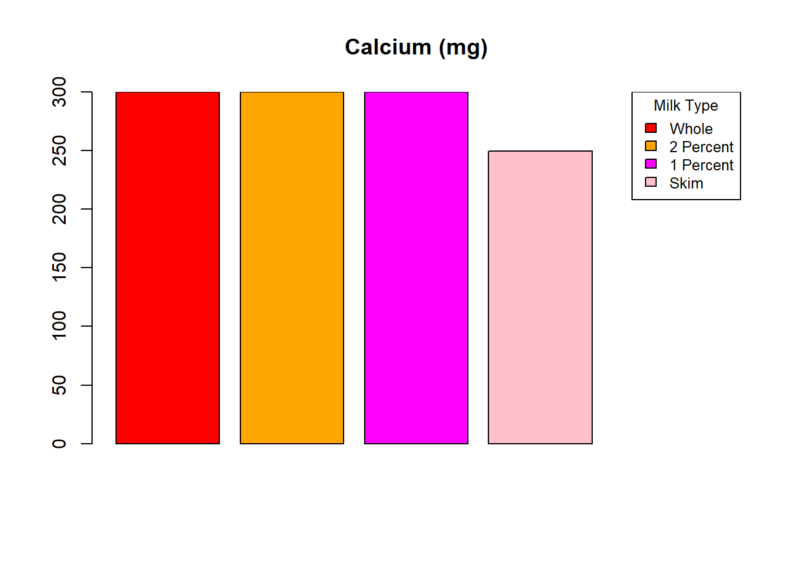
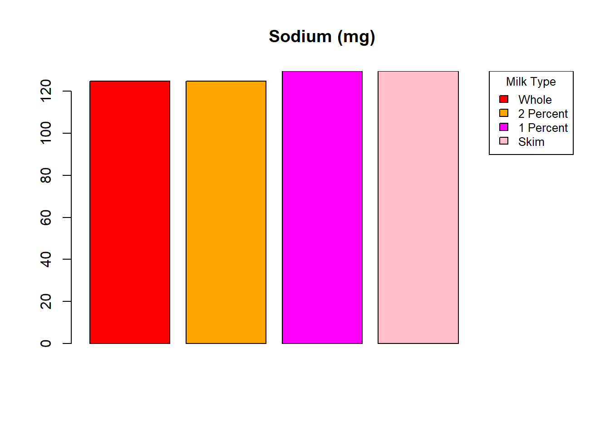
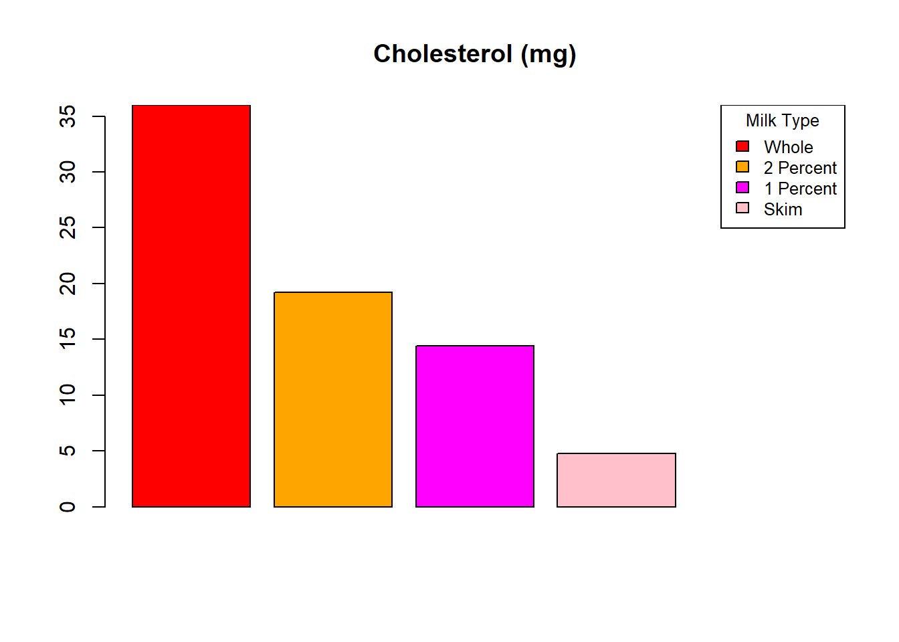
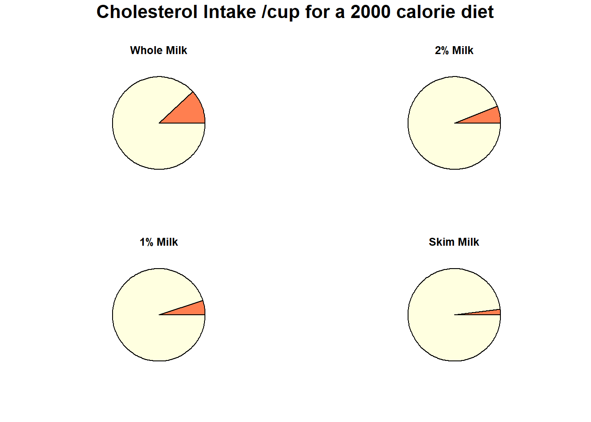

df <- readxl::read_xlsx('nutri.xlsx')|>
head(11)
nutri <- df |>
as.data.frame() |>
mutate(Whole = as.double(Whole))
nutri_d <- nutri |>
mutate(mean_diff = rowMeans(across(c(Whole, `2 Percent`, `1 Percent`))) -Skim) |>
select(c(1,6)) |>
filter(mean_diff != 0)
print(nutri_d)## Nutritional Components mean_diff
## 1 Calories 38.66667
## 2 Calcium (mg) 50.40000
## 3 Sodium (mg) -3.20000
## 4 Cholesterol (mg) 18.40000We calculated the mean of the nutritional components for whole, 2% and 1% milk and subtracted the corresponding component for skim milk. If this mean difference is not 0 it means that there is some difference across the milk types for that component.
extra = c (0,0,0,0)
selected_rows <- nutri[c(1, 3, 5, 11), ]
nutri_bp = cbind(selected_rows, extra)
rows_to_plot <- c(1, 2, 3, 4)
legend_labels <- names(nutri_bp)[2:(ncol(nutri_bp) - 1)]
# Loop
for (i in rows_to_plot) {
values <- as.numeric(nutri_bp[i, 2:ncol(nutri_bp)])
plot_title <- nutri_bp[i, 1]
bc = c("red","magenta","lightblue","cyan","transparent")
bar_pos <- barplot(values, main = plot_title, col = bc, border = NA)
for (j in seq_along(values)) { if (values[j] != 0) {
rect(bar_pos[j] - 0.5, 0, bar_pos[j] + 0.5, values[j], border = "black") }
}
legend("topright", legend = legend_labels, fill = bc[-length(bc)], title = "Components", cex = 0.8)
}
There is a decreasing trend as we go towards the lower fat options for calories and cholesterol. Quantity of sodium is roughly the same for all 4 (higher in 1% and skim). Skim has the least amount of calcium. The rest seem to have the same amount.
library(plotly)##
## Attaching package: 'plotly'## The following object is masked from 'package:ggplot2':
##
## last_plot## The following object is masked from 'package:stats':
##
## filter## The following object is masked from 'package:graphics':
##
## layout# Data for the pie charts
percentages <- c(10, 6, 3, 0)
titles <- c("Whole Milk", "2% Milk", "1% Milk", "Skim Milk")
colors <- c("blue", "white")
custom_texts <- c("Whole Milk has 10% fat", "2% Milk has 6% fat", "1% Milk has 3% fat", "Skim Milk has no fat")
# Initialize an empty list for plots
subplot_list <- list()
# Create pie charts with hover text for each chart
for (i in 1:4) {
values <- c(percentages[i], 100 - percentages[i])
hover_text <- c(custom_texts[i], "Remaining")
pie_chart <- plot_ly(
type = 'pie',
labels = c("Fat", "Non-fat"),
values = values,
marker = list(colors = colors),
text = hover_text,
hoverinfo = 'text',
showlegend = FALSE
) %>% layout(title = titles[i])
subplot_list[[i]] <- pie_chart
}
# Combine all pie charts into a single layout
subplot_combined <- subplot(subplot_list, nrows = 2, titleX = TRUE, titleY = TRUE, margin = 0.05)
# Add a main title
subplot_combined <- subplot_combined %>% layout(title = list(text = "Fat Intake /cup for a 2000 calorie diet"))
# Display the plot
subplot_combined## Warning: 'layout' objects don't have these attributes: 'NA'
## Valid attributes include:
## '_deprecated', 'activeshape', 'annotations', 'autosize', 'autotypenumbers', 'calendar', 'clickmode', 'coloraxis', 'colorscale', 'colorway', 'computed', 'datarevision', 'dragmode', 'editrevision', 'editType', 'font', 'geo', 'grid', 'height', 'hidesources', 'hoverdistance', 'hoverlabel', 'hovermode', 'images', 'legend', 'mapbox', 'margin', 'meta', 'metasrc', 'modebar', 'newshape', 'paper_bgcolor', 'plot_bgcolor', 'polar', 'scene', 'selectdirection', 'selectionrevision', 'separators', 'shapes', 'showlegend', 'sliders', 'smith', 'spikedistance', 'template', 'ternary', 'title', 'transition', 'uirevision', 'uniformtext', 'updatemenus', 'width', 'xaxis', 'yaxis', 'barmode', 'bargap', 'mapType'# Making a layout
layout(matrix(c(1, 1, 2, 3, 4, 5), nrow=3, ncol=2, byrow=TRUE), heights=c(0.2, 1, 1))
par(mar=c(0, 0, 2, 0)) # Adjust margins for the title
plot.new()
title(main="Cholesterol Intake /cup for a 2000 calorie diet", cex.main=2, font.main=2)
percentages <- c(12, 6, 5, 2)
titles <- c("Whole Milk", "2% Milk", "1% Milk", "Skim Milk")
colors <- c("red", "white")
par(mar=c(4, 4, 2, 2)) # Adjusting margins
#Pie charts
for (i in 1:4) { pie(c(percentages[i], 100 - percentages[i]), labels = c("", ""), col = colors, main = titles[i], cex = 1.5)}
The above pie charts show the cholesterol intake per cup for a 2000 calorie diet. Obviously, higher fat means more cholesterol. This intake is quite important as a health conscious person is likely to lean towards the lower fat options because of the lower cholesterol. Accompany the individual cholesterol with the fact that most people will use milk in some way and not just drink it straight up implies that the way they consume it (through cereal or drinks) would increase their cholesterol intake due to what they added.